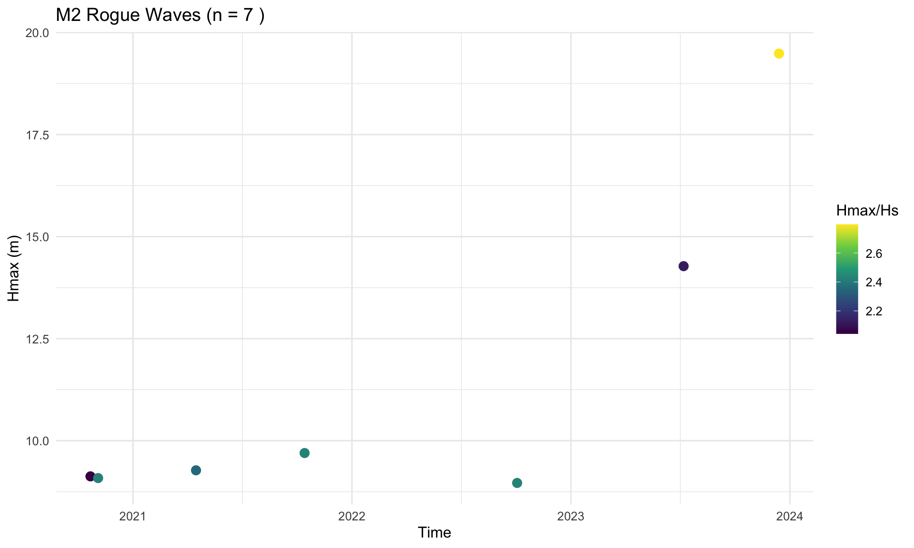
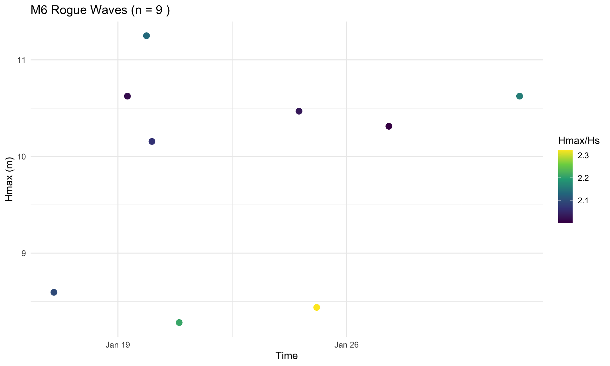

Show code
glossary <- wave_glossary()
create_dt(glossary, "Wave Measurement Terminology - Click columns to sort, use filters to search")Irish Weather Buoy Network Data Analysis
This vignette provides comprehensive wave and wind analysis from the Irish Weather Buoy Network using data from the Marine Institute’s ERDDAP server.
All analysis is computed via {targets} pipeline for reproducibility. Run targets::tar_make() to regenerate.
glossary <- wave_glossary()
create_dt(glossary, "Wave Measurement Terminology - Click columns to sort, use filters to search")The relationship Hs = 4σ comes from wave spectrum theory (Longuet-Higgins, 1952).
Why 4? This is a mathematical constant from the Rayleigh distribution:
\[H_{1/3} = \int_{H_{67\%}}^{\infty} H \cdot f(H) \, dH = 4.004\sigma \approx 4\sigma\]
\[H_{rms} = \frac{H_s}{\sqrt{8}} \approx 0.707 \times H_s\]
| Wave Type | Typical Period | Waves in 17.5 min |
|---|---|---|
| Wind waves | 3-10 s | 105-350 |
| Swell | 10-25 s | 42-105 |
| Average | ~8 s | ~130 |
WMO minimum: 17 minutes. Marine Institute: 17.5 minutes (lower bound for ~100+ waves).
Rogue wave: Hmax/Hs > 2.0 (or 2.2 strict threshold)
if (has_targets && nrow(rogue_events) > 0) {
ggplot(rogue_events, aes(x = time, y = rogue_ratio, color = station_id)) +
geom_point(alpha = 0.7, size = 2) +
geom_hline(yintercept = 2.0, linetype = "dashed", color = "red") +
geom_hline(yintercept = 2.2, linetype = "dotted", color = "darkred") +
labs(x = "Time", y = "Hmax / Hs Ratio", color = "Station",
title = paste("Rogue Wave Events (n =", nrow(rogue_events), ")")) +
theme(legend.position = "bottom")
} else {
cat("No rogue wave data available. Run targets::tar_make() to generate.")
}
if (has_targets && nrow(rogue_events) > 0) {
rogue_events %>%
arrange(desc(rogue_ratio)) %>%
select(time, station_id, hs, hmax, rogue_ratio) %>%
mutate(
time = format(time, "%Y-%m-%d %H:%M"),
hs = round(hs, 2),
hmax = round(hmax, 2),
rogue_ratio = round(rogue_ratio, 3)
) %>%
create_dt("All Rogue Wave Events - Click columns to sort")
} else {
cat("No rogue wave data available.")
}if (has_targets) {
m2 <- rogue_events[rogue_events$station_id == "M2", ]
if (nrow(m2) > 0) {
ggplot(m2, aes(x = time, y = hmax, color = rogue_ratio)) +
geom_point(size = 3) + scale_color_viridis_c(name = "Hmax/Hs") +
labs(x = "Time", y = "Hmax (m)", title = paste("M2 Rogue Waves (n =", nrow(m2), ")"))
} else cat("No rogue waves at M2")
}
if (has_targets) {
m2 <- rogue_events[rogue_events$station_id == "M2", ]
if (nrow(m2) > 0) {
m2 %>% arrange(desc(rogue_ratio)) %>%
select(time, hs, hmax, rogue_ratio) %>%
mutate(
time = format(time, "%Y-%m-%d %H:%M"),
across(c(hs, hmax), ~round(., 2)),
rogue_ratio = round(rogue_ratio, 3)
) %>%
create_dt("M2 Rogue Waves")
}
}if (has_targets) {
m3 <- rogue_events[rogue_events$station_id == "M3", ]
if (nrow(m3) > 0) {
ggplot(m3, aes(x = time, y = hmax, color = rogue_ratio)) +
geom_point(size = 3) + scale_color_viridis_c(name = "Hmax/Hs") +
labs(x = "Time", y = "Hmax (m)", title = paste("M3 Rogue Waves (n =", nrow(m3), ")"))
} else cat("No rogue waves at M3")
}
if (has_targets) {
m3 <- rogue_events[rogue_events$station_id == "M3", ]
if (nrow(m3) > 0) {
m3 %>% arrange(desc(rogue_ratio)) %>%
select(time, hs, hmax, rogue_ratio) %>%
mutate(time = format(time, "%Y-%m-%d %H:%M"), across(c(hs, hmax), ~round(., 2)), rogue_ratio = round(rogue_ratio, 3)) %>%
create_dt("M3 Rogue Waves")
}
}if (has_targets) {
m4 <- rogue_events[rogue_events$station_id == "M4", ]
if (nrow(m4) > 0) {
ggplot(m4, aes(x = time, y = hmax, color = rogue_ratio)) +
geom_point(size = 3) + scale_color_viridis_c(name = "Hmax/Hs") +
labs(x = "Time", y = "Hmax (m)", title = paste("M4 Rogue Waves (n =", nrow(m4), ")"))
} else cat("No rogue waves at M4")
}
if (has_targets) {
m4 <- rogue_events[rogue_events$station_id == "M4", ]
if (nrow(m4) > 0) {
m4 %>% arrange(desc(rogue_ratio)) %>%
select(time, hs, hmax, rogue_ratio) %>%
mutate(time = format(time, "%Y-%m-%d %H:%M"), across(c(hs, hmax), ~round(., 2)), rogue_ratio = round(rogue_ratio, 3)) %>%
create_dt("M4 Rogue Waves")
}
}if (has_targets) {
m5 <- rogue_events[rogue_events$station_id == "M5", ]
if (nrow(m5) > 0) {
ggplot(m5, aes(x = time, y = hmax, color = rogue_ratio)) +
geom_point(size = 3) + scale_color_viridis_c(name = "Hmax/Hs") +
labs(x = "Time", y = "Hmax (m)", title = paste("M5 Rogue Waves (n =", nrow(m5), ")"))
} else cat("No rogue waves at M5")
}
if (has_targets) {
m5 <- rogue_events[rogue_events$station_id == "M5", ]
if (nrow(m5) > 0) {
m5 %>% arrange(desc(rogue_ratio)) %>%
select(time, hs, hmax, rogue_ratio) %>%
mutate(time = format(time, "%Y-%m-%d %H:%M"), across(c(hs, hmax), ~round(., 2)), rogue_ratio = round(rogue_ratio, 3)) %>%
create_dt("M5 Rogue Waves")
}
}if (has_targets) {
m6 <- rogue_events[rogue_events$station_id == "M6", ]
if (nrow(m6) > 0) {
ggplot(m6, aes(x = time, y = hmax, color = rogue_ratio)) +
geom_point(size = 3) + scale_color_viridis_c(name = "Hmax/Hs") +
labs(x = "Time", y = "Hmax (m)", title = paste("M6 Rogue Waves (n =", nrow(m6), ")"))
} else cat("No rogue waves at M6")
}
if (has_targets) {
m6 <- rogue_events[rogue_events$station_id == "M6", ]
if (nrow(m6) > 0) {
m6 %>% arrange(desc(rogue_ratio)) %>%
select(time, hs, hmax, rogue_ratio) %>%
mutate(time = format(time, "%Y-%m-%d %H:%M"), across(c(hs, hmax), ~round(., 2)), rogue_ratio = round(rogue_ratio, 3)) %>%
create_dt("M6 Rogue Waves")
}
}if (!is.null(rogue_conditions) && "wind_category" %in% names(rogue_conditions)) {
wind_sum <- rogue_conditions %>%
group_by(wind_category) %>%
summarise(n = n(), mean_ratio = mean(rogue_ratio, na.rm = TRUE), .groups = "drop")
ggplot(wind_sum, aes(x = reorder(wind_category, n), y = n, fill = mean_ratio)) +
geom_col() + coord_flip() + scale_fill_viridis_c(name = "Mean Ratio") +
labs(x = "Wind Category", y = "Count", title = "Rogue Waves by Wind Speed")
} else {
cat("Weather condition data not available. Run targets::tar_make()")
}Weather condition data not available. Run targets::tar_make()if (!is.null(rogue_conditions) && "wind_category" %in% names(rogue_conditions)) {
rogue_conditions %>%
select(any_of(c("time", "station_id", "rogue_ratio", "wind_category", "wind_speed"))) %>%
mutate(
time = format(time, "%Y-%m-%d %H:%M"),
across(where(is.numeric), ~round(., 2))
) %>%
create_dt("Rogue Waves by Wind Conditions")
}if (!is.null(rogue_conditions) && "season" %in% names(rogue_conditions)) {
season_sum <- rogue_conditions %>%
group_by(season) %>%
summarise(n = n(), mean_hmax = mean(hmax, na.rm = TRUE), .groups = "drop") %>%
mutate(season = factor(season, levels = c("Winter", "Spring", "Summer", "Autumn")))
ggplot(season_sum, aes(x = season, y = n, fill = mean_hmax)) +
geom_col() + scale_fill_viridis_c(name = "Mean Hmax") +
labs(x = "Season", y = "Count", title = "Rogue Waves by Season")
} else {
cat("Season data not available")
}Season data not availableif (!is.null(rogue_conditions) && "season" %in% names(rogue_conditions)) {
rogue_conditions %>%
select(any_of(c("time", "station_id", "rogue_ratio", "season", "hmax"))) %>%
mutate(time = format(time, "%Y-%m-%d %H:%M"), across(where(is.numeric), ~round(., 2))) %>%
create_dt("Rogue Waves by Season")
}if (!is.null(rogue_conditions) && "time_of_day" %in% names(rogue_conditions)) {
tod_sum <- rogue_conditions %>%
group_by(time_of_day) %>%
summarise(n = n(), .groups = "drop")
ggplot(tod_sum, aes(x = time_of_day, y = n)) +
geom_col(fill = "steelblue") +
labs(x = "Time of Day", y = "Count", title = "Rogue Waves by Time of Day")
} else {
cat("Time of day data not available")
}Time of day data not availableif (!is.null(rogue_conditions)) {
rogue_conditions %>%
select(any_of(c("time", "station_id", "rogue_ratio", "wind_category", "season", "time_of_day"))) %>%
mutate(time = format(time, "%Y-%m-%d %H:%M"), across(where(is.numeric), ~round(., 3))) %>%
create_dt("All Rogue Wave Conditions")
}if (!is.null(seasonal_means_wave)) {
if ("monthly" %in% names(seasonal_means_wave)) {
monthly <- seasonal_means_wave$monthly
monthly$month_name <- factor(monthly$month_name, levels = month.abb)
ggplot(monthly, aes(x = month_name, y = mean)) +
geom_col(fill = "steelblue") +
geom_errorbar(aes(ymin = mean - sd, ymax = mean + sd), width = 0.3) +
labs(x = "Month", y = "Mean Hs (m)", title = "Monthly Wave Height")
}
} else {
cat("Seasonal data not available. Run targets::tar_make()")
}Seasonal data not available. Run targets::tar_make()if (!is.null(seasonal_means_wave) && "monthly" %in% names(seasonal_means_wave)) {
seasonal_means_wave$monthly %>%
mutate(across(where(is.numeric), ~round(., 2))) %>%
create_dt("Monthly Wave Height Statistics")
}if (!is.null(seasonal_means_wind)) {
if ("monthly" %in% names(seasonal_means_wind)) {
monthly <- seasonal_means_wind$monthly
monthly$month_name <- factor(monthly$month_name, levels = month.abb)
ggplot(monthly, aes(x = month_name, y = mean)) +
geom_col(fill = "darkorange") +
geom_errorbar(aes(ymin = mean - sd, ymax = mean + sd), width = 0.3) +
labs(x = "Month", y = "Mean Wind Speed (m/s)", title = "Monthly Wind Speed")
}
} else {
cat("Wind seasonal data not available")
}Wind seasonal data not availableif (!is.null(seasonal_means_wind) && "monthly" %in% names(seasonal_means_wind)) {
seasonal_means_wind$monthly %>%
mutate(across(where(is.numeric), ~round(., 2))) %>%
create_dt("Monthly Wind Speed Statistics")
}if (!is.null(annual_trends_wave) && "annual_stats" %in% names(annual_trends_wave)) {
annual <- annual_trends_wave$annual_stats
ggplot(annual, aes(x = year, y = mean)) +
geom_point(size = 3) + geom_line(alpha = 0.5) +
geom_errorbar(aes(ymin = mean - sd, ymax = mean + sd), width = 0.3, alpha = 0.5) +
geom_smooth(method = "lm", se = TRUE, color = "red", alpha = 0.2) +
labs(x = "Year", y = "Mean Hs (m)", title = "Annual Wave Height Trend")
} else {
cat("Annual trend data not available. Run targets::tar_make()")
}Annual trend data not available. Run targets::tar_make()if (!is.null(annual_trends_wave) && "annual_stats" %in% names(annual_trends_wave)) {
annual_trends_wave$annual_stats %>%
mutate(across(where(is.numeric), ~round(., 2))) %>%
create_dt("Annual Wave Height Statistics")
}if (!is.null(wave_stl) && "components" %in% names(wave_stl)) {
stl_df <- wave_stl$components
stl_long <- tidyr::pivot_longer(stl_df,
cols = c(original, seasonal, trend, remainder),
names_to = "component", values_to = "value")
stl_long$component <- factor(stl_long$component,
levels = c("original", "trend", "seasonal", "remainder"))
ggplot(stl_long, aes(x = time, y = value)) +
geom_line(color = "steelblue", alpha = 0.7) +
facet_wrap(~component, scales = "free_y", ncol = 1) +
labs(x = "Time", y = "Wave Height (m)", title = "STL Decomposition")
} else {
cat("STL decomposition not available")
}STL decomposition not availableif (!is.null(return_levels_wave)) {
ggplot(return_levels_wave, aes(x = return_period, y = return_level)) +
geom_ribbon(aes(ymin = lower, ymax = upper), alpha = 0.3, fill = "steelblue") +
geom_line(color = "steelblue", linewidth = 1.2) +
geom_point(color = "steelblue", size = 3) +
scale_x_log10() +
labs(x = "Return Period (years)", y = "Hs (m)", title = "Wave Height Return Levels")
} else {
cat("Return levels not available. Run targets::tar_make()")
}Return levels not available. Run targets::tar_make()if (!is.null(return_levels_wave)) {
return_levels_wave %>%
mutate(across(where(is.numeric), ~round(., 2))) %>%
create_dt("Wave Height Return Levels")
}if (!is.null(return_levels_hmax)) {
ggplot(return_levels_hmax, aes(x = return_period, y = return_level)) +
geom_ribbon(aes(ymin = lower, ymax = upper), alpha = 0.3, fill = "darkred") +
geom_line(color = "darkred", linewidth = 1.2) +
geom_point(color = "darkred", size = 3) +
scale_x_log10() +
labs(x = "Return Period (years)", y = "Hmax (m)", title = "Maximum Wave Return Levels")
} else {
cat("Hmax return levels not available")
}Hmax return levels not availableif (!is.null(return_levels_hmax)) {
return_levels_hmax %>%
mutate(across(where(is.numeric), ~round(., 2))) %>%
create_dt("Hmax Return Levels")
}if (!is.null(return_levels_wind)) {
ggplot(return_levels_wind, aes(x = return_period, y = return_level)) +
geom_ribbon(aes(ymin = lower, ymax = upper), alpha = 0.3, fill = "darkorange") +
geom_line(color = "darkorange", linewidth = 1.2) +
geom_point(color = "darkorange", size = 3) +
scale_x_log10() +
labs(x = "Return Period (years)", y = "Wind Speed (m/s)", title = "Wind Speed Return Levels")
} else {
cat("Wind return levels not available")
}Wind return levels not availableif (!is.null(return_levels_wind)) {
return_levels_wind %>%
mutate(across(where(is.numeric), ~round(., 2))) %>%
create_dt("Wind Return Levels")
}if (!is.null(return_levels_wave) && !is.null(return_levels_hmax)) {
bind_rows(
return_levels_wave %>% mutate(Variable = "Hs"),
return_levels_hmax %>% mutate(Variable = "Hmax"),
if (!is.null(return_levels_wind)) return_levels_wind %>% mutate(Variable = "Wind") else NULL
) %>%
select(Variable, return_period, return_level, lower, upper) %>%
mutate(across(where(is.numeric), ~round(., 1))) %>%
create_dt("Return Levels Summary")
}Gust Factor = Peak Gust / Sustained Wind. Typical value: ~1.3
if (!is.null(gust_analysis) && "summary" %in% names(gust_analysis)) {
gust_analysis$summary %>%
mutate(across(where(is.numeric), ~round(., 2))) %>%
create_dt("Gust Factor Statistics")
} else {
cat("Gust analysis not available. Run targets::tar_make()")
}Gust analysis not available. Run targets::tar_make()if (!is.null(gust_analysis) && "by_category" %in% names(gust_analysis)) {
gust_cat <- gust_analysis$by_category
ggplot(gust_cat, aes(x = wind_category, y = mean_gf)) +
geom_col(fill = "darkorange") +
geom_hline(yintercept = 1.3, linetype = "dashed", color = "red") +
labs(x = "Wind Speed Category", y = "Gust Factor",
title = "Gust Factor by Wind Speed")
}if (!is.null(gust_analysis) && "by_category" %in% names(gust_analysis)) {
gust_analysis$by_category %>%
mutate(across(where(is.numeric), ~round(., 2))) %>%
create_dt("Gust Factor by Wind Category")
}store_path <- file.path("..", "_targets")
if (dir.exists(store_path)) {
cat("Targets store found at:", normalizePath(store_path), "\n")
tryCatch({
meta <- targets::tar_meta(store = store_path)
cat("Total targets:", nrow(meta), "\n")
cat("Completed:", sum(meta$error == FALSE, na.rm = TRUE), "\n")
}, error = function(e) cat("Could not read targets metadata\n"))
} else {
cat("No targets store found. Run targets::tar_make() to generate analysis.\n")
}Targets store found at: /Users/johngavin/docs_gh/proj/data/weather/irish_buoy_network/irishbuoys/_targets
Total targets: 61
Completed: 0 sessionInfo()R version 4.5.2 (2025-10-31)
Platform: aarch64-apple-darwin24.6.0
Running under: macOS Tahoe 26.2
Matrix products: default
BLAS: /nix/store/gf17x1bj3m732n39jznn6kz69szbr5rb-blas-3/lib/libblas.dylib
LAPACK: /nix/store/5kg4z5bffhr8nry8bl8l5wlxvpy54dm2-openblas-0.3.30/lib/libopenblasp-r0.3.30.dylib; LAPACK version 3.12.0
locale:
[1] en_US.UTF-8/en_US.UTF-8/en_US.UTF-8/C/en_US.UTF-8/en_US.UTF-8
time zone: UTC
tzcode source: internal
attached base packages:
[1] stats graphics grDevices utils datasets methods base
other attached packages:
[1] targets_1.11.4 DT_0.34.0 ggplot2_4.0.1 dplyr_1.1.4
[5] irishbuoys_0.0.91 testthat_3.3.2
loaded via a namespace (and not attached):
[1] gtable_0.3.6 xfun_0.55 bslib_0.9.0 httr2_1.2.2
[5] htmlwidgets_1.6.4 processx_3.8.6 callr_3.7.6 vctrs_0.6.5
[9] tools_4.5.2 crosstalk_1.2.2 ps_1.9.1 generics_0.1.4
[13] base64url_1.4 tibble_3.3.1 pkgconfig_2.0.3 data.table_1.18.0
[17] secretbase_1.1.0 RColorBrewer_1.1-3 S7_0.2.1 desc_1.4.3
[21] assertthat_0.2.1 lifecycle_1.0.5 compiler_4.5.2 farver_2.1.2
[25] brio_1.1.5 codetools_0.2-20 htmltools_0.5.9 sass_0.4.10
[29] yaml_2.3.12 pillar_1.11.1 jquerylib_0.1.4 cachem_1.1.0
[33] tidyselect_1.2.1 digest_0.6.39 duckdb_1.4.3 purrr_1.2.1
[37] labeling_0.4.3 arrow_22.0.0 rprojroot_2.1.1 fastmap_1.2.0
[41] grid_4.5.2 cli_3.6.5 magrittr_2.0.4 pkgbuild_1.4.8
[45] withr_3.0.2 prettyunits_1.2.0 scales_1.4.0 backports_1.5.0
[49] rappdirs_0.3.3 bit64_4.6.0-1 lubridate_1.9.4 timechange_0.3.0
[53] rmarkdown_2.30 igraph_2.2.1 bit_4.6.0 otel_0.2.0
[57] evaluate_1.0.5 knitr_1.51 viridisLite_0.4.2 rlang_1.1.7
[61] glue_1.8.0 DBI_1.2.3 pkgload_1.4.1 jsonlite_2.0.0
[65] R6_2.6.1